Causal Inference with Spatial Data
(ArcGIS 10 for Economics Research)
Lecture 8
Map Algebra
Masayuki Kudamatsu
31 August, 2018
Press SPACE to proceed.
To go back to the previous slide, press SHIFT+SPACE.
What is Map Algebra?
Cell-by-cell calculation across multiple raster datasets
1. Arithmetic operations
-
with numbers (e.g.,
raster*2) -
across several raster datasets (e.g.,
ras1 + ras2)
2. Functions
- Math toolset (square root, logarithm, sine/cosine, etc.)
- Cell Statistics
- Focal Statistics
Python for Map Algebra
Write a Python script to use Map Algebra
- Raster Calculator tool does the same job in Model Builder
- But it's not meant to be exported as a Python script
We will learn how
Today's road map
1. Mayshar, Moav, Neeman, & Pascali (2015)
2. Arithmetics in Map Algebra
- Dictionary in Python
3. Cell Statistics
4. Focal Statistics
- Replicate ruggedness index in Nunn & Puga (2012)
5. Other geo-processing tools used in economics
1. Mayshar, Moav, Neeman, & Pascali (2015)
Research Question
What caused the formation of the state?
Important?
- Early state formation: associated with higher living standards today (Bockstette et al. 2002, Gennaioli & Rainer 2007, Michalopoulos & Papaioannou 2013)
Original?
- Previous studies focused on agriculture in generale
- This study: focus on crop type (cereal vs tuber/root)
- Convincing causal evidence
Feasible?
Theory
Roots and Tubers
Cassava, yam, taro, bananas...
Perishable upon harvest
Harvesting is non-seasonal
$\Rightarrow$ No incentive to steal / confiscate
Theory (cont.)
Cereals
Wheat, rice, maize...
Storable
Harvest within a short period of time
$\Rightarrow$ Incentive to steal / confiscate
Theory (cont.)
State formation
Building a state incurs a fixed cost
Bandits have no incentive to build a state with roots & tubers
Historical examples
- Ancinet Egypt: wheat with state
- New Guinea: yam/taro without state
cf. Coltan vs gold in DR Congo (Sanchez de la Sierra (2014))
Data
State formation
- Ethnographic Atlas for cross-sectional regression
- Borcan et al. (2014) for panel cross-country regression
Suitability for agriculture by crop
- Potential yields obtained from Global Agro-Ecological Zones (GAEZ)
Data (cont.)
GAEZ
Resolution: 5 x 5 arc-minutes (about 10 X 10 km)
Data: potential yields based on climate & soil
$\Rightarrow$ Exogeneous to human activities
$\Rightarrow$ Widely used by economists
Jurisdictional Hierarchy
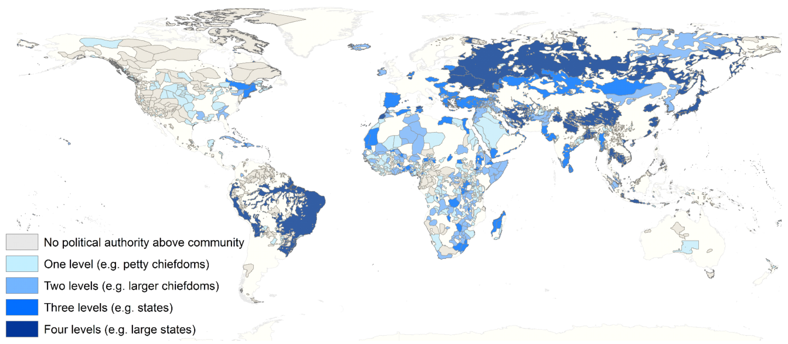(Figure 4 of Mayshar, Moav, Neeman, & Pascali (2015))
Cereal's relative productivity to tuber/root
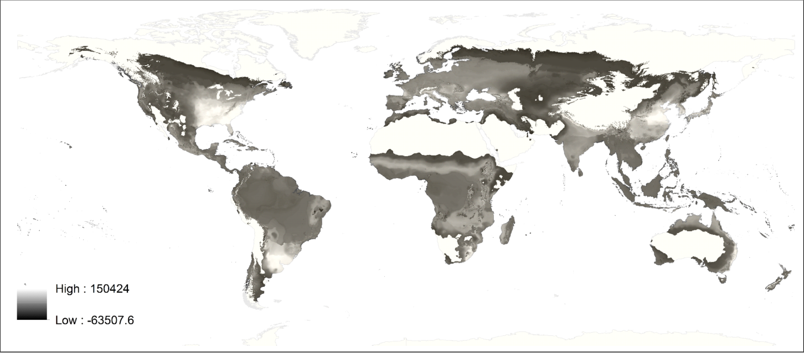(Figure 7 of Mayshar, Moav, Neeman, & Pascali (2015))
Empirical specification: cross-section
Sample: 952 pre-colonial societies
\begin{align*} y_{ic} = \alpha_c + \beta CAL\_DIF_i + \gamma MAX\_CAL_{i} + \varepsilon_{i} \end{align*}
| $y_{i}$ | # jurisdictional levels beyond villages |
| $CAL\_DIF_i$ | Cereal's relative caloric yield to tuber |
| $MAX\_CAL_i$ | Maximum caloric yield among all crops |
| $\alpha_c$ | Continent fixed effects |
Main results (cross-section)
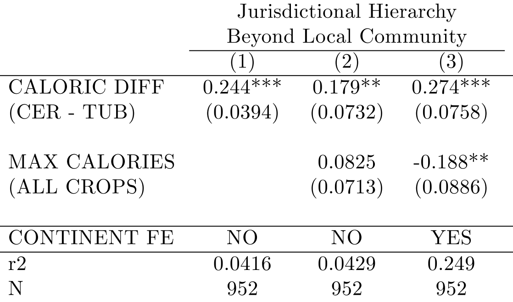(Table 3 of Mayshar, Moav, Neeman, & Pascali (2015))
Natural experiment:
Colombian exchange
Until 1500:
| Cereals | Tubers | |
| New World | Maize only | All but yams |
| Old World | All but maize | Yams only |
$\Rightarrow$ Around 1500, cereals' relative productivity to tubers changed exogenously!
Empirical specification: panel
Sample: 159 countries from 1000 to 2000 (every 50 years)
\begin{align*} y_{ct} = \beta CAL\_DIF_{it} + \gamma MAX\_CAL_{it} + \mu_c + \eta_t*x_c + \varepsilon_{i} \end{align*}
| $y_{ct}$ | Government above tribal level |
| $\mu_c$ | Country fixed effect |
| $\eta_t*x_c$ | Year fixed effect * country characteristics |
Main results (panel)
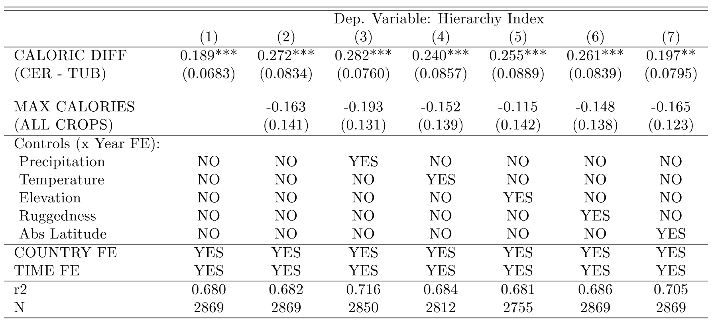(Table 6 of Mayshar, Moav, Neeman, & Pascali (2015))
Prepare for the rest of this lecture
1. Launch ArcMap 10 (it takes time)
2. Download the zipped dataset for Lecture 8
3. Save it to Desktop (C:\\Users\\yourname\\Desktop)
- Don't save in the remote server, which slows down ArcGIS
4. Right-click it and choose 7-Zip > Extract to "Lecture8\"
-
So the directory path will be:
C:\\Users\\yourname\\Desktop\\Lecture8
Prepare for the rest of this lecture (cont.)
Now in ArcMap's Catalogue Window:
5. Establish connection to data folder
- Right-click "Folder Connections"
- Select "Connect to Folder"
- Choose "Desktop > Lecture8"
(We don't use Model Builder today)
2. Arithmetics in Map Algebra
Data we want to construct
Caloric yields by crop at each 5-minute cell across the world
- GAEZ provides each crop's potential yield in tons per hectare
$\Rightarrow$ Multiply it w/ crop-specific conversion factor
Calorie conversion factors
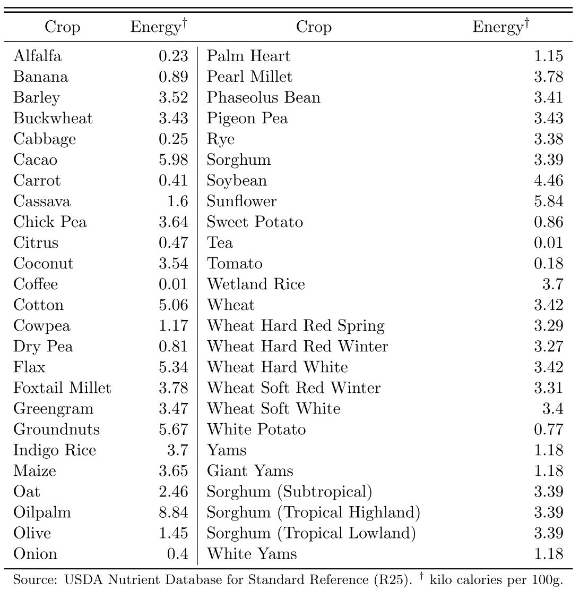(Table A.1 of Online Appendix for Galor & Ozak 2016)
Data we want to construct (cont.)
So we need to edit each 5-minute cell of GAEZ
$\Rightarrow$ Use Map Algebra
Map Algebra basics #1
Import Spatial Analyst Module
To use Map Algebra, start the script by:
import arcpy
from arcpy.sa import *
arcpy.CheckOutExtension("spatial")
-
I provide these lines in
.../Lecture8/code/template4L8ex*.py
Map Algebra basics #1
Import Spatial Analyst Module
To use Map Algebra, start the script by:
import arcpy
from arcpy.sa import *
arcpy.CheckOutExtension("spatial")
Without this line, every method for Map Algebra has to have the prefix arcpy.sa.
Map Algebra basics #1
Import Spatial Analyst Module
To use Map Algebra, start the script by:
import arcpy
from arcpy.sa import *
arcpy.CheckOutExtension("spatial")
Map Algebra is part of Spatial Analyst extension.
Without this, you cannot use it
Map Algebra basics #2
Raster Object
To use Map Algebra, we need to understand the concept of Raster Object
Raster Object (cont.)
To use arithmetic operators, first convert each raster data into a Raster object by Raster method:
maize_yield = Raster("maize.tif")
cf. If the script didn't start with
from arcpy.sa import *
we have to write:
maize_yield = arcpy.sa.Raster("maize.tif")
Raster Object (cont.)
Raster object can be used just like X in high-school algebra
maize_yield = Raster("maize.tif")
maize_calorie = maize_yield * 36.5
Arithmetic operators for Map Algebra / Python

(taken from ArcGIS Help)
Raster Object (cont.)
Output from calculation is also a Raster object
maize_yield = Raster("maize.tif")
maize_calorie = maize_yield * 36.5
It's not saved in the disk. Just in memory.
Raster Object (cont.)
To save a raster object in the disk, use the save method
maize_yield = Raster("maize.tif")
maize_calorie = maize_yield * 36.5
maize_calorie.save("maize_calorie.tif")
Raster Object (cont.)
To save a raster object in the disk, use the save method
maize_yield = Raster("maize.tif")
maize_calorie = maize_yield * 36.5
maize_calorie.save("maize_calorie.tif")
Add .save() to raster object name
Raster Object (cont.)
To save a raster object in the disk, use the save method
maize_yield = Raster("maize.tif")
maize_calorie = maize_yield * 36.5
maize_calorie.save("maize_calorie.tif")
Within ( ), specify the output raster file name
Map Algebra basics #3
Functions
Various mathematical functions available
- Ln, SquareRoot, Cos, Sin, Tan, etc.
- See ArcGIS Help for the complete list
Functions (cont.)
To use functions, the input raster doesn't have to be a Raster object
Output of a function is a Raster object, though
$\Rightarrow$ To save the output, use save method
Exercise #1
Calorie conversion for maize
Inputs
-
GAEZ data:
../input/GAEZ/maize.tif - Conversion factor: 36.5
Output
-
../output/maize_calorie.tif
Exercise #1 (cont.)
print "Inputs being set..."
input_raster = "../input/GAEZ/maize.tif"
conversion_factor = 36.5
print "Outputs being set..."
output_raster = "../output/calorie_maize.tif"
try:
maize_yield = Raster(input_raster)
maize_calorie = maize_yield * conversion_factor
maize_calorie.save(output_raster)
except arcpy.ExecuteError:
...
How to repeat for 15 crops
How do we repeat this for other 14 crops?
Naive approach by 1st-year PhD student:
- Copy and paste
- Replace file names and conversion factor for each crop
We should avoid copy-and-paste
- Not readable for other people and your future self
- Difficult to revise
- You have to change 15 lines for each revision
- You may forget to change a few of them
Use a loop over 15 crops
detour: defensive programming
If tempted to copy-and-paste during programming
$\Rightarrow$ Youl should better use a loop
One example of what's known as defensive programming
detour: defensive programming (cont.)
"Computer scientists assume programmers will make mistakes, and instead of chiding people to “just be careful,” they have developed a battery of practices to address the problem." (Nick Eubank)
(Click the link to learn more)
How to repeat for 15 crops (cont.)
We need a loop over crop names
Each crop has a different conversion factor
$\Rightarrow$ Link crop name + conversion factor in each turn of loop
$\Rightarrow$ Use dictionary in Python
Dictionary in Python
Another of Python data types to be assigned to a variable
- cf. Lecture 4
It's a set of pairs
Just like a Norwegian-English dictionary
- Each pair: Norwegian word and its translation in English
Dictionary in Python (cont.)
Syntax to define a dictionary
dict = {'jeg':'I', 'du':'you', 'vi':'we'}
Enclose the whole by { }
Dictionary in Python (cont.)
Syntax to define a dictionary
dict = {'jeg':'I', 'du':'you', 'vi':'we'}
Each pair is separated by , (comma)
Dictionary in Python (cont.)
Syntax to define a dictionary
dict = {'jeg':'I', 'du':'you', 'vi':'we'}
Each element within a pair is separated by : (colon)
Dictionary in Python (cont.)
Syntax to define a dictionary
dict = {'jeg':'I', 'du':'you', 'vi':'we'}
can be replaced with any other variable name of your choice
Dictionary in Python (cont.)
Key and Value
dict = {'jeg':'I', 'du':'you', 'vi':'we'}
1st element in pair: called key
Dictionary in Python (cont.)
Key and Value
dict = {'jeg':'I', 'du':'you', 'vi':'we'}
2nd element in pair: called value
Dictionary in Python (cont.)
Obtian value from key
dict = {'jeg':'I', 'du':'you', 'vi':'we'}
Once this dictionary called dict is defined:
dict['jeg']
|
returns | 'I'
|
dict['du']
|
returns |
'you'
|
dict['vi']
|
returns |
'we'
|
Dictionary in Python (cont.)
Another way to define a dictionary
dict = {}
dict['jeg'] = 'I'
dict['du'] = 'you'
dict['vi'] = 'we'
Create an empty dictonary
Dictionary in Python (cont.)
Another way to define a dictionary
dict = {}
dict['jeg'] = 'I'
dict['du'] = 'you'
dict['vi'] = 'we'
Assign key 'jeg' to value 'I'
Dictionary in Python (cont.)
Another way to define a dictionary
dict = {}
dict['jeg'] = 'I'
dict['du'] = 'you'
dict['vi'] = 'we'
More readable if there are many key-value pairs
Dictionary in Python (cont.)
Another way to define a dictionary
dict = {}
dict['jeg'] = 'I'
dict['du'] = 'you'
dict['vi'] = 'we'
dict['norsk'] = 'Norwegian'
dict['engelsk'] = 'English'
Also you can add more key-value pairs later
Dictionary in Python (cont.)
Create a list of keys
key_list = dict.keys()
$\Rightarrow$ Can create a loop over keys by
for key in key_list:
Exercise #2
Calorie conversion for 15 crops
1. Create a dictionary of calorie conversion factors
2. Loop over 15 crops
Exercise #2 Step 1: Calorie conversion factors
calorie = {}
calorie['barley'] = 35.2
calorie['buckwheat'] = 34.3
calorie['maize'] = 36.5
calorie['millet_pearl'] = 37.8
calorie['millet_foxtail'] = 37.8
calorie['oat'] = 24.6
calorie['rice_indica'] = 37
calorie['rice_wetland'] = 37
calorie['rye'] = 33.8
calorie['sorghum'] = 33.9
calorie['wheat'] = 34.2
calorie['cassava'] = 16
calorie['sweetpotato'] = 8.6
calorie['whitepotato'] = 7.7
calorie['yams'] = 11.8
Exercise #2 Step 2
Loop over crop names
Create a Python list of crop names as crops:
crops = calorie.keys()
for crop in crops:
Exercise #2 Step 2 (cont.)
Loop over crop names
Set a loop over crop names:
crops = calorie.keys()
for crop in crops:
Exercise #2 Step 3
Calorie conversion
Create a Raster object
crops = calorie.keys()
for crop in crops:
arcpy.env.workspace = "../input/GAEZ"
crop_yield = Raster(crop+".tif")
Exercise #2 Step 3: Calorie conversion (cont.)
Retrieve conversion factor as dictionary value for key crop
crops = calorie.keys()
for crop in crops:
arcpy.env.workspace = "../input/GAEZ"
crop_yield = Raster(crop+".tif")
calorie_yield = crop_yield * calorie[crop]
Exercise #2 Step 3: Calorie conversion (cont.)
Convert yield into calorie by Map Algebra
crops = calorie.keys()
for crop in crops:
arcpy.env.workspace = "../input/GAEZ"
crop_yield = Raster(crop+".tif")
calorie_yield = crop_yield * calorie[crop]
Exercise #2 Step 4
Save the output raster file
crops = calorie.keys()
for crop in crops:
arcpy.env.workspace = "../input/GAEZ"
crop_yield = Raster(crop+".tif")
calorie_yield = crop_yield * calorie[crop]
arcpy.env.workspace = "../output"
calorie_yield.save("calorie_"+crop+".tif")
Tips for output file names
Use the same name as the script that creates the output
- Easy to find which script creates which data file
If a script creates multiple outputs
$\Rightarrow$ use the script's name as prefix
-
calorie.py$\rightarrow$calorie_maize.tif,calorie_cassava.tif, etc.
So save the script as calorie.py
Trouble shooting
If your script crashes, close Python Shell from the previous execution
- Python Shell: the window that shows error messages
- It seems ArcGIS keeps the output files open until you close Python Shell
3. Cell Statistics
Data we want to construct
Maximum caloric yield among cereal crops
Maximum caloric yield among tubers
Difference of these two (main regressor)
Maximum caloric yield among all crops (control)
$\Rightarrow$ Cell Statistics tool can handle these
Cell Statistics
Calculate summary statistics in each raster cell
- Same set of statistics as for Zonal Statistics (cf Lec 5)
Inputs: multiple raster datasets
$\Rightarrow$ Use a Python list to specify inputs
- cf. Inputs to Intersect tool (Lec 4)
Cell Statistics (cont.)
1st argument: input raster list
If input_rasters is a Python list of calorie rasters, we can write:
max_calorie = CellStatistics(input_rasters,"MAXIMUM","DATA")
Cell Statistics (cont.)
2nd argument: statistics to be calculated
Don't forget to enclose it with " "
max_calorie = CellStatistics(input_rasters,"MAXIMUM","DATA")
See ArcGIS Help for other statistics
Cell Statistics (cont.)
max_calorie = CellStatistics(input_rasters,"MAXIMUM","DATA")
3rd argument: ignore missing values if "DATA"
If "NODATA", output cell value is missing wherever at least one input raster data has a missing value
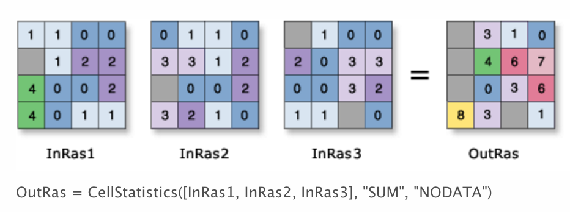Input raster list
Now how to specify the list of input rasters?
input_rasters = ???
max_calorie = CellStatistics(input_rasters,"MAXIMUM","DATA")
Directly writing file names: likely to make a mistake
When file names are changed, this script will crash
Input raster list (cont.)
ListRasters method helps
arcpy.env.workspace = "../output"
input_rasters = arcpy.ListRasters("calorie_*", "TIF")
max_calorie = CellStatistics(input_rasters,"MAXIMUM","DATA")
Collect all TIFF files with "calorie_" as prefix
Input raster list (cont.)
ListRasters method helps
arcpy.env.workspace = "../output"
input_rasters = arcpy.ListRasters("calorie_*", "TIF")
max_calorie = CellStatistics(input_rasters,"MAXIMUM","DATA")
Raster data folder is specified by arcpy.env.workspace
Input raster list (cont.)
arcpy.env.workspace = "../output"
input_rasters = arcpy.ListRasters("calorie_*", "TIF")
max_calorie = CellStatistics(input_rasters,"MAXIMUM","DATA")
This code is fine if we need maximum among all crops
To obtain maximum for cereals and for tubers separately...
Input raster list (cont.)
By renaming all cereal (tuber) raster files as "calorie_cereal_" ("calorie_tuber_"):
arcpy.env.workspace = "../output"
input_cereals = arcpy.ListRasters("calorie_cereal_*", "TIF")
max_cereal = CellStatistics(input_cereals, "MAXIMUM", "DATA")
input_tubers = arcpy.ListRasters("calorie_tuber_*", "TIF")
max_tuber = CellStatistics(input_tubers, "MAXIMUM", "DATA")
Maximum will be calculated for each type of crops
$\Rightarrow$ Revise calorie.py
Branching by crop type
Use if/else statement to branch by crop type
for crop in crops:
arcpy.env.workspace = "../input/GAEZ"
crop_yield = Raster(crop+".tif")
calorie_yield = crop_yield * calorie[crop]
arcpy.env.workspace = "../output"
if crop == "cassava" or crop == "sweetpotato" or crop == "whitepotato" or crop == "yams":
calorie_yield.save("calorie_tuber_"+crop+".tif")
else:
calorie_yield.save("calorie_cereal_"+crop+".tif")
Exercise #3
Practice with Map Algebra and Cell Statistics
Start with /Lecture8/code/lec8ex3.py
1. Calculate caloric difference between cereal and tuber
2. Obtain maximum caloric yield for all crops
3. Save the outputs
Caloric differences between cereal and tuber
Use simple arithmetic expression
max_cereal = CellStatistics(input_cereals, "MAXIMUM", "DATA")
max_tuber = CellStatistics(input_tubers, "MAXIMUM", "DATA")
caloric_diff = max_cereal - max_tuber
Maximum caloric yield for all crops
Use Cell Statistics again
max_cereal = CellStatistics(input_cereals, "MAXIMUM", "DATA")
max_tuber = CellStatistics(input_tubers, "MAXIMUM", "DATA")
caloric_diff = max_cereal - max_tuber
max_calorie = CellStatistics([max_cereal, max_tuber], "MAXIMUM", "DATA")
Save outputs
Use the save method
max_cereal = CellStatistics(input_cereals, "MAXIMUM", "DATA")
max_tuber = CellStatistics(input_tubers, "MAXIMUM", "DATA")
caloric_diff = max_cereal - max_tuber
max_calorie = CellStatistics([max_cereal, max_tuber], "MAXIMUM", "DATA")
arcpy.env.workspace = "../output"
max_cereal.save("max_calorie_cereal.tif")
max_tuber.save("max_calorie_tuber.tif")
caloric_diff.save("max_calorie_diff.tif")
max_calorie.save("max_calorie_all.tif")
And save the script as max_calorie.py
Model Python Script for Lecture 8
Look at "/Lecture8/code/solutions" folder
Assignment 1
Aggregate to Ethnographic Atlas
Obtain average caloric difference within 20-mile radius of each society
INPUTS: /Lecture8/input/ethnographic_atlas.shp
Which geo-processing tools should we use?
Solution: see tribes20m.py
Assignment 2 (advanced)
Obtain caloric difference before 1500
1. Create indicator raster for New World
- Create a polygon of American continent
- Polygon to Raster
2. Use the Con tool to assign 0 calorie to relevant cells
-
Con(americas=1, calorie_maize, 0)returns: - calorie_maize's raster value for New World cells
- 0 for Old World cells
- See ArcGIS Help on Con for detail
4. Focal Statistics
Focal Statistics
Calculates summary statistics in neighbouring raster cells
e.g. Sum of immediate neighbors

Focal Statistics (cont.)
You can define the neighborhood very flexibly (more detail)
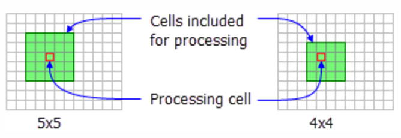Rectangle
Focal Statistics (cont.)
You can define the neighborhood very flexibly (more detail)
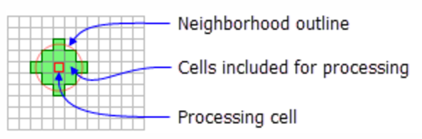Circle
Focal Statistics (cont.)
You can define the neighborhood very flexibly (more detail)
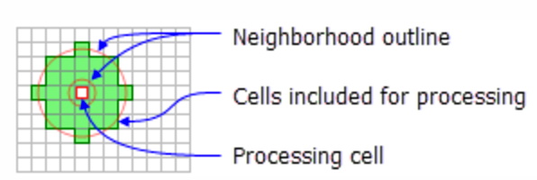Annulus (ring)
Focal Statistics (cont.)
You can define the neighborhood very flexibly (more detail)
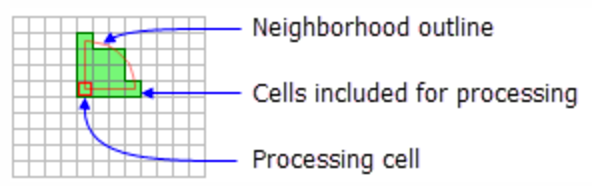Wedge
Focal Statistics (cont.)
You can define the neighborhood very flexibly (more detail)
Irregular
Focal Statistics (cont.)
You can define the neighborhood very flexibly (more detail)
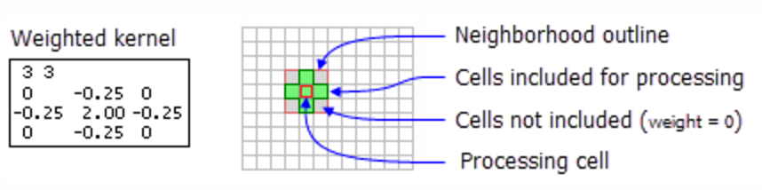Weight
Application of Focal Statistics
Nunn & Puga (2011)
Estimate terrain ruggedness's impact on income per capita
Negative outside Africa
- Transportation cost
Positive in Africa
- Negative once slave export is controlled for
Terrain Ruggedness Index
Originally proposed by Riley et al. (1999)
Defined as: \begin{align*} TRI_{xy} =& \sqrt{\sum_{i=x-1}^{x+1} \sum_{j=y-1}^{y+1} (e_{ij}-e_{xy})^2} \end{align*}
| $e_{xy}$ | Elevation at longitude $x$ latitude $y$ |
Can be obtained by Focal Statistics + Map Algebra
Raster cell (30x30 arc-sec) level data is downloadable from Diego Puga's website
Terrain Ruggedness Index (cont.)
Expand the expression inside the square root:
\begin{align*} TRI_{xy} =& \sqrt{\sum_i \sum_j (e_{ij})^2 - 2e_{xy}\sum_i\sum_j e_{ij} + 9 (e_{xy})^2} \end{align*}
Map Algebra calculates $(e_{ij})^2$:
elev = Raster("srtm30.tif")
elev_sq = elev**2
Terrain Ruggedness Index (cont.)
Expand the expression inside the square root:
\begin{align*} TRI_{xy} =& \sqrt{\sum_i \sum_j (e_{ij})^2 - 2e_{xy}\sum_i\sum_j e_{ij} + 9 (e_{xy})^2} \end{align*}
Focal Statistics calculates $\sum_i \sum_j (e_{ij})^2$ and $\sum_i\sum_j e_{ij}$:
sum_elev_sq = FocalStatistics(elev_sq, "", "SUM", "")
sum_elev = FocalStatistics(elev, "", "SUM", "")
Terrain Ruggedness Index (cont.)
Expand the expression inside the square root:
\begin{align*} TRI_{xy} =& \sqrt{\sum_i \sum_j (e_{ij})^2 - 2e_{xy}\sum_i\sum_j e_{ij} + 9 (e_{xy})^2} \end{align*}
Map Algebra sums them up and takes square root:
TRI_square = sum_elev_sq - 2*elev*sum_elev + 9*elev_sq
TRI = SquareRoot(TRI_square)
TRI.save("ruggedness.tif")
5. Other geo-processing tools used by economists
Hariri (2017)
How city shapes affect population, wages, and housing rents
- Compact shapes reduce transportation cost etc.
How can we measure city shapes?
Hariri (2017) (cont.)
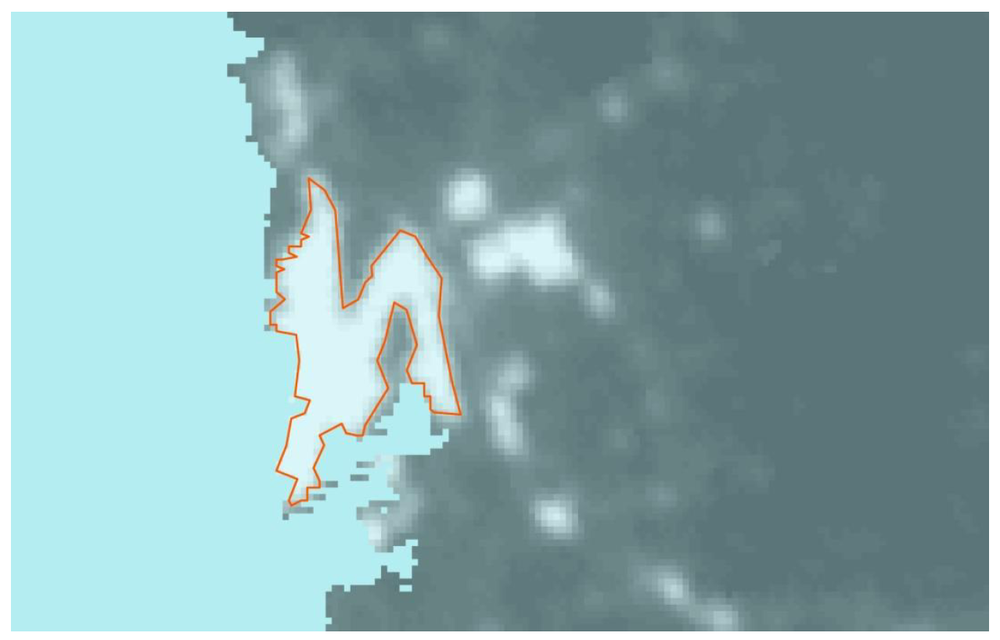Use nighttime light image
Luminosity over 40 is defined as urban area
$\Rightarrow$ Reclassify tool (cf. Lec 6)
Hariri (2017) (cont.)
Then use the Region Group tool, to assign unique ID to each urban area
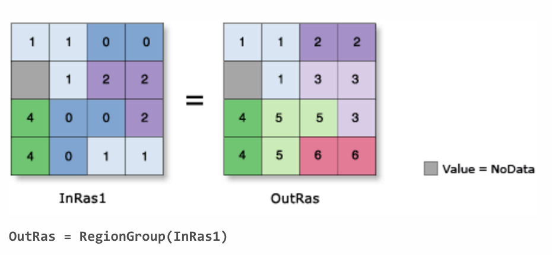For shape metrics, use Spatial Statistics Toolbox
Konig et al. (2017)
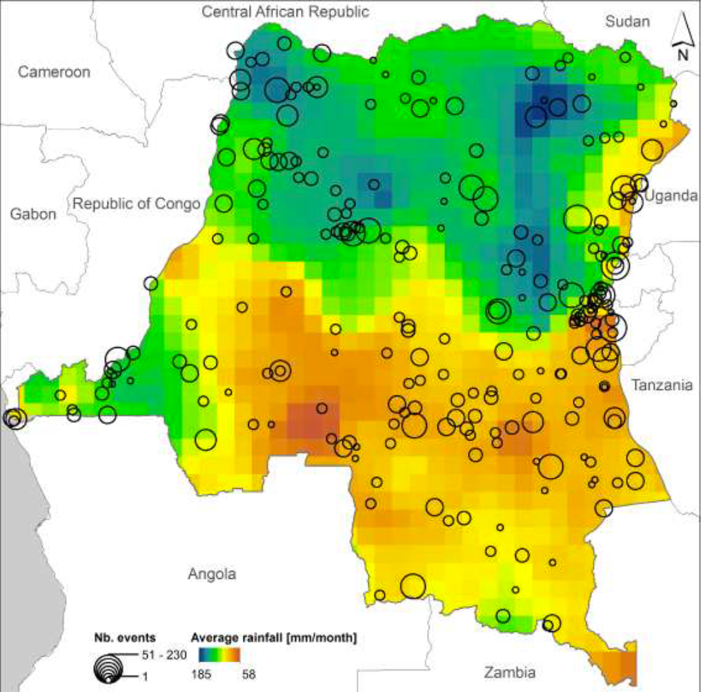Estimate the externality of military efforts on allied partners' effort in DR Congo civil wars
Use rainfall shock as instruments
But how do we measure the location of each military actor?
Konig et al. (2015) (cont.)
Minimum Bounding Geometry tool with Convex Hull option
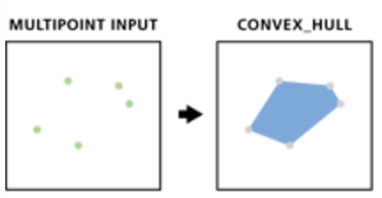Directional Distribution (Standard Deviation Ellipse) tool

Create Thiessen Polygons tool
Divide surface by nearest point (aka Voronoi partition)

Alesina et al. (2016) use it as a robustness check to Murdock's ethnic homeland boundaries
Alsan (2015) (cf. Lec 2) uses it as an alternative to the 20-miles radius of Ethnographic Atlas society location
Useful tools for data cleaning
Clip (Analysis): clip vector by polygon

Extrast By Mask: clip raster by polygon
Useful tools for data cleaning (cont.)
Erase: open holes in polygons by polygons
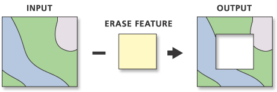- Example: remove lakes from country polygons
What we've learned on ArcGIS
- Cell-by-cell calculations on multiple raster datasets
- Loop over keys in Python dictionary
- Create a Python list of raster dataset names